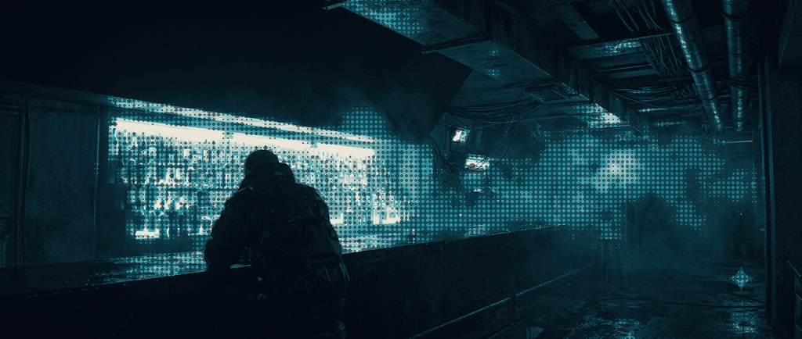

Groovebox · iPhone and iPad
Nobody agrees on where a track starts. Jolt takes no position on it.
Eight voices, each with its own step sequencer — and a step owns its instrument, so any voice can play any instrument on any step. Pick a way in below. They are doors onto the same machine.
The browser demo is a slice of the engine — the real DSP compiled to WebAssembly, behind a simple sequencer. It is not the app.
Get started
Different people open a groovebox for different reasons. None of these is the beginner one; each is a door onto the same instrument.
Tap steps until it moves. The Drum Synth is x0x-style and synthesised rather than sampled, so hi-hats, snares and heavy kicks are tuned rather than chosen from a folder.
Sixteen steps on screen. Up to sixty-four when the idea needs the room.
Record through the microphone, or load a wav or an mp3. Play it pitched — repitched the old way, so it speeds up on the way up — or slice it and lay the slices across the steps.
A radio, a door, a record. It does not have to be interesting yet.
Classic Synth is a wavetable with four modes: spread, 2-op FM, paraphony, and in-scale chords, where a chord is a step rather than a decision. Macro Synth holds sixteen sub-synths based on a classic Eurorack module.
Draw the notes, play them in over MIDI, or generate them.
A pattern can be programmed by hand, played in over MIDI, or generated. What comes out is an ordinary pattern — every step editable, across as many as four pages.
Useful when the blank grid is the problem rather than the ideas.
Pattern editor · iPhoneOne voice's lane. Each step carries the icon of the instrument that plays it. Rendered from the app's design tokens, not captured.
Wherever you came in
A voice is not a channel with one sound parked in it. Step 1 can be a kick, step 6 a chord, step 11 a sub-synth. The sequencer decides per step, and eight voices run at once.
Tracker semantics in a groovebox layout. It is the reason the easy ways in do not run out — you keep adding without needing to add tracks.
Specification
None of it needs reading before you start, and none of it is behind a door you have to find later.
Eleven insert effects — overdrive, a four-stage ladder filter and a sixteen-step gater among them — on any instrument, any number, in any order. Four sends after that. Up to five global macros under your fingers in performance mode, and three layers of modulation, from an assignable LFO up to song automation.
Patterns chain into songs with automation. Light external MIDI sequencing for whatever else is on the desk.
iPhone in portrait, iPad in landscape. On iPad the editor clusters merge onto one surface where the phone uses sub-tabs, and the note editor shows three lanes against one. More controls resident, less menu-diving — that is the whole of the difference.

Pick a door
Patterns, songs, automation and the mixdown happen in the same app. Groovebox simplicity, tracker flexibility.